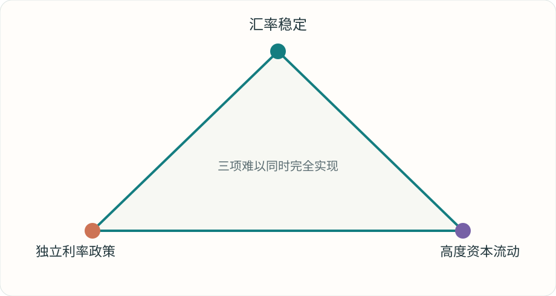

开放经济宏观经济学
进口超出出口意味着什么？从 IMF 国际收支的账户符号、资本流动与汇率制度认识开放经济。
一个国家进口比出口多，就意味着已经陷入危机吗？
一国购买外国商品的价值可能在某个时期大于商品出口，但商品贸易余额不是全部经常账户，更不是整体国际收支。一个经济体还会出口或进口服务、获得国外投资收入、向非居民支付股息、收到跨境转移收入。经常账户净值代表跨境商品服务及收入的净流量；要理解资金从哪里来，还需要资本账户和金融账户。
如何用符号与一组构造数字核对国际收支？
设货物和服务的出口 X=30、进口 M=40，则净出口 NX=−10；跨境初次收入净额 +4（工资、投资等收入净收取），二次收入净额 −1（例如无对价转移），因此经常账户 CA=−10+4−1=−7。若资本账户 KA=+2，则经常账户与资本账户合计为 −5，即本经济体对世界其余部分净借款 5，不是「贸易逆差40」。
改变贸易与收入项目，观察净借贷方向
所有金额是同一期间、同一计价单位的构造净流量；资本账户默认 +2。
金融账户为何不是「流入就记正」的简单加总
在 BPM 账户口径中，金融账户的净额一般表示金融资产的净取得减去负债净发生。假设居民企业增加海外金融资产3、对外国投资者新增债务或股权负债8，那么金融账户净额 FA=3−8=−5，是对外净借款。这个方向与上面的 CA+KA=−5 一致；现实发布还可能出现统计误差与遗漏。
金融账户负值不意味着每家企业在海外借款，也不等于经常账户必然不可持续。经常账户逆差可能用于生产性投资，也可能对应脆弱的短期外币负债；要进一步检查国际投资头寸、借款期限、币种、净收益和经济增长前景。
汇率制度的政策三难选择怎样推导？
经典开放经济政策的「不可能三角」指出，若跨境资本能够自由迅速流动，又要固定汇率在可信水平，则国内利率难以长期独立于锚货币利率，除非风险溢价等因素变化。政策制定者在汇率稳定、资本高度流动和独立货币利率之间必须权衡，不是说现实国家只有三种互不混合的制度。

蒙代尔–弗莱明模型能说明什么、不能说明什么？
在价格短期固定、资本高度流动、经济规模较小等教科书条件下，浮动汇率时财政扩张可能引起本币升值、净出口下降，从而削弱产出反应；可信固定汇率时货币政策对利率和汇率的约束更强，财政变化可能更直接影响总需求。这些是在明确汇率制度与资本流动假设下的比较静态，而非所有国家实际政策的确定结局。
| 模型情景 | 典型调节渠道 | 关键边界 |
|---|---|---|
| 浮动汇率＋高资本流动 | 汇率对利差与净出口做出反应 | 风险溢价与贸易弹性影响结果 |
| 固定汇率＋高资本流动 | 利率与外汇储备调整受锚约束 | 维持盯住需要制度可信度 |
| 资本流动受限 | 短期国内利率空间可能更大 | 执行成本与套利替代可能出现 |
从开放经济进入 汇率的购买力平价、利率平价与最优货币区 时，还必须统一汇率报价方向：我们将定义 E 为「一单位外币可兑换多少本币」，因此 E 上升意味着本币名义贬值。
来源与阅读
国际收支符号参照 IMF 与 ECB 的统计口径；案例中的国家和流量均为假设。